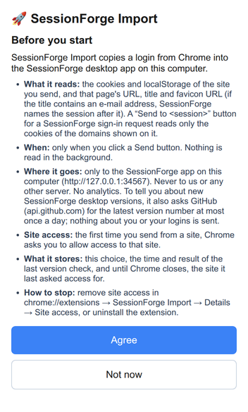
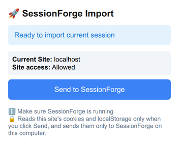
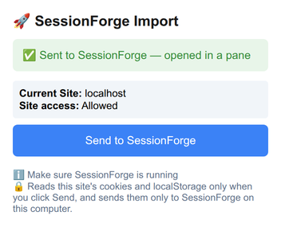
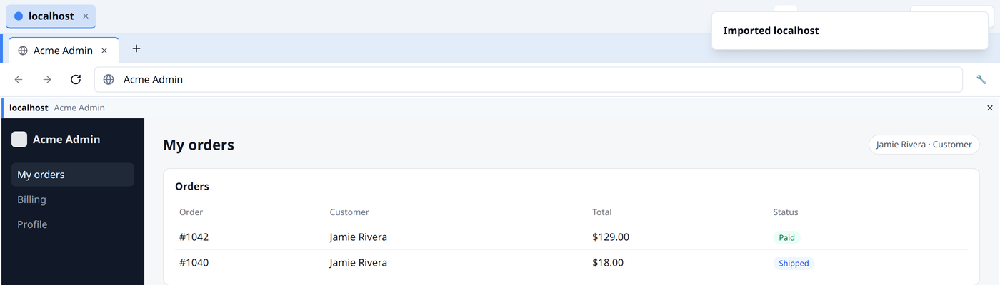
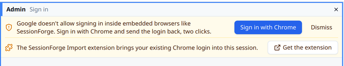
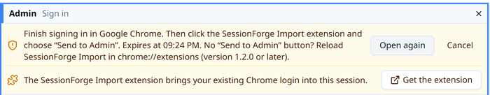
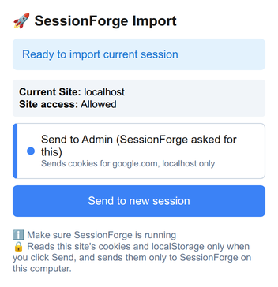
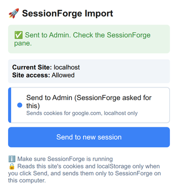
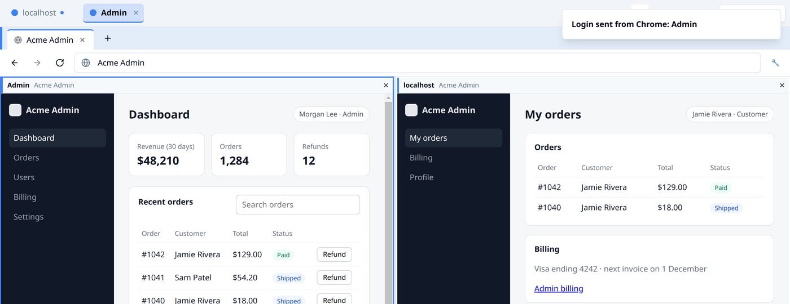

SessionForge Import: send a Chrome login to SessionForge in one click
You are already logged in to your app in Chrome. Click SessionForge Import, then Send to SessionForge, and the same login opens in a new SessionForge session, in a pane.
Free, Apache-2.0. Talks only to SessionForge on 127.0.0.1. Needs the SessionForge desktop app running.
How it works
- Log in to a site in Chrome as usual.
- Click the SessionForge Import icon. The first time, a short notice says what it reads, when, where it goes and how to stop it. Click Agree. Nothing is read or sent before that, and Not now stores nothing.
- Click Send to SessionForge. The first time you send from a site, Chrome asks you to allow access to that site.
- SessionForge creates a session, names it after the e-mail address in the tab title (Gmail titles have one) or else the hostname, and opens the page in a free pane, already logged in.








In SessionForge: the new session opened in a pane, logged in as the same user. Captured with a local demo app.
Sign in with Chrome, for Google
Google blocks Google account sign-in inside embedded browsers, and SessionForge is one. SessionForge does not disguise itself to get around this. Instead, when a pane reaches a Google sign-in page, a banner in that pane offers Sign in with Chrome:
- Click Sign in with Chrome. Your browser opens the right sign-in page.
- Sign in there as usual.
- Click SessionForge Import and choose Send to <session> (SessionForge asked for this).
The login goes into the session that asked for it, and the waiting pane continues where it left off. This works for Google services such as Gmail and YouTube, and for "Sign in with Google" on other sites. A request is valid for 10 minutes and works once. It needs extension version 1.2.0 or later and SessionForge's import server on its default port 34567.










The waiting Admin pane continued, logged in. In this capture a local test page stands in for Google's sign-in page; no Google account was used.
One Google account per Chrome profile. When several Google accounts are signed in to one Chrome profile, every login sent from that profile carries all of them, and signing out in one session can sign out the others. Use a separate Chrome profile per Google account. A hand-off sends cookies only, not localStorage, so sites that keep their login in localStorage or IndexedDB stay signed out; use Send to new session for those.
Privacy and permissions
- No site access at install. The first time you send from a site, Chrome asks you to allow that site (and its subdomains). If you don't, nothing is read or sent.
- Reads only when you click Send: the cookies Chrome sends to that page plus its site's domain cookies, the page's localStorage (current origin only), and the page URL, title and favicon URL. A "Send to <session>" button reads only the cookies of the domains shown on it. Not copied: sessionStorage, IndexedDB, history, bookmarks, saved passwords.
- Sends only to SessionForge on your computer:
POST http://127.0.0.1:34567/import. Opening the popup also asksGET http://127.0.0.1:34567/pendingwhich sessions wait for a login. - One version check a day, after you agreed: it asks GitHub (
api.github.com) for the latest SessionForge version number and carries none of your data. The popup shows a download link when your desktop app is older. - Stores your answer to the notice and the last version check in
chrome.storage.local, and until Chrome closes, the site it last asked access for. - No analytics, no telemetry, no remote code.
The exact permissions in manifest.json:
| Permission | Why |
|---|---|
activeTab | Read the current tab's address and title when you open the popup |
cookies | Read the site's cookies when you click Send |
scripting | Read the page's localStorage when you click Send |
storage | Remember your answer to the notice and the last version check |
http://127.0.0.1:34567/* (host) | Talk to SessionForge's import server on your computer |
*://*/* (optional host) | Asked per site, only when you send from it |
To stop it, remove site access in chrome://extensions → SessionForge Import → Details → Site access, or uninstall it. Full statement: store/PRIVACY.md.
Install
From the Chrome Web Store (recommended). Or load it unpacked, for working on the extension:
- Get the
chrome-extension/folder: clone the repo, or download the source zip from the release. - Open
chrome://extensions/and turn on Developer mode (top right). - Click Load unpacked and select the
chrome-extension/folder. - Optional: pin it with the puzzle-piece icon in the toolbar.
Built and tested for Chrome (103 or later). Edge and Brave use the same extension format and should work, but they are untested. Firefox is not supported.
Troubleshooting
- "SessionForge is not running (could not reach 127.0.0.1:34567)": start SessionForge and check that nothing else uses port 34567.
- "Chrome did not allow access to …, so nothing was sent": click Send again and allow access, or click Allow access in a tab.
- "Only http(s) pages can be sent": the tab is a
chrome://page, the Web Store or a file. Open the site itself. - "This request expired or was already used": click Sign in with Chrome in SessionForge again. A request lasts 10 minutes and works once.
- No "Send to <session>" button: update the extension to 1.2.0 or later and check that SessionForge uses port 34567.
- Imported but not logged in: some sites keep the login outside cookies and localStorage. Log in once inside SessionForge; the session keeps it.
All messages: chrome-extension/README.md.
Bring your Chrome logins into SessionForge
Free. Works with the SessionForge desktop app for macOS, Windows and Linux.